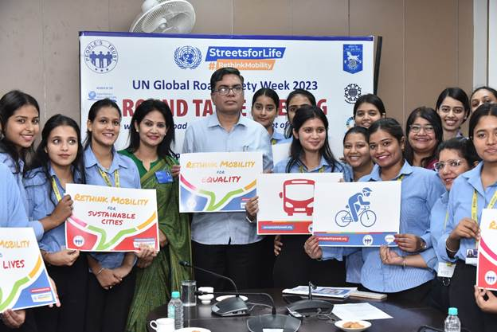
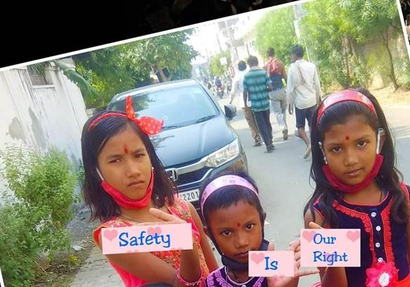

United for Safer Roads: UN Decade of Action for Road Safety
In a world marked by rapid urbanization, burgeoning populations, and ever-increasing mobility, road safety has emerged as a paramount concern. The United Nations' Decade of Action for Road Safety, spanning from 2021 to 2030, aims to address the escalating global road safety crisis through comprehensive initiatives, partnerships, and advocacy. This feature delves into the significance of this decade-long campaign and the collaborative efforts required to make our roads safer for everyone.
1. The Urgent Need for Action
The statistics are sobering: Every year, more than 1.35 million lives are
cut short due to road traffic accidents, with countless more suffering
life-altering injuries. Road accidents rank among the leading causes of
death and injury globally, particularly affecting low- and middle-income
countries where road safety measures may be inadequate.
2. A Vision for the Decade
The United Nations' Decade of Action for Road Safety is founded on a clear
vision: to stabilize and then reduce the forecasted level of road traffic
deaths and injuries around the world by 2030. This ambitious goal is
anchored in the belief that road safety is a shared responsibility,
requiring the collective commitment of governments, civil society, private
sector entities, and individuals.
3. Pillars of Action
The Decade of Action for Road Safety is underpinned by five pillars, each
addressing a crucial aspect of road safety:
a. Road Safety Management: Strengthening institutional capacity, setting
road safety targets, and developing comprehensive national road safety
strategies.
b. Safer Roads and Mobility: Designing safer road infrastructure, improving
public transportation systems, and enhancing pedestrian and cyclist safety.
c. Safer Vehicles: Promoting the adoption of vehicle safety standards,
encouraging the use of modern safety technologies, and raising awareness
about vehicle safety ratings.
d. Safer Road Users: Educating and raising awareness among road users about
safe behaviors, promoting the use of helmets, seat belts, and child
restraints, and combatting distracted and impaired driving.
e. Post-Crash Response: Enhancing emergency medical services, trauma care,
and rehabilitation for road crash victims to minimize the impact of
accidents.
4. Global Partnerships and Collaborative Efforts
The Decade of Action for Road Safety acknowledges that no single entity can
address the road safety crisis alone. A multitude of stakeholders, including
governments, international organizations, non-governmental organizations,
and the private sector, are coming together to champion road safety as a
shared priority.
5. Technology as a Game Changer
Advances in technology are poised to play a pivotal role in advancing road
safety during this decade. Innovations such as advanced driver assistance
systems, vehicle-to-vehicle communication, and the eventual realization of
autonomous vehicles have the potential to dramatically reduce the occurrence
of accidents caused by human error.
6. Empowering Communities and Individuals
The success of the Decade of Action for Road Safety hinges on the active
involvement of individuals and communities. Road safety awareness campaigns,
educational initiatives, and grassroots advocacy efforts are vital to foster
a culture of responsible road use and encourage safe behaviors.
7. Measuring Progress and Celebrating Success
As the decade progresses, monitoring and evaluating progress will be
crucial. Regular assessments of road safety measures, data analysis, and
impact assessments will ensure that efforts remain on track and that
successes are celebrated.
8. A Collective Legacy
The United Nations' Decade of Action for Road Safety is more than a
campaign; it is a call to action that transcends borders and cultures. It is
a testament to the global community's commitment to saving lives and
preventing injuries on our roads. By working together, sharing knowledge,
and implementing evidence-based interventions, we can transform the road
safety landscape and leave a lasting legacy of safer roads for generations
to come.
In Conclusion
As the world navigates the complex challenges of the 21st century, ensuring
road safety stands as a fundamental and non-negotiable priority. The United
Nations' Decade of Action for Road Safety serves as a beacon of hope,
inspiring governments, organizations, and individuals to unite, innovate,
and advocate for safer roads. With a shared commitment, unwavering
dedication, and a relentless pursuit of progress, we can collectively turn
the tide and make the vision of safer roads a reality for all.
Reporting from Jaipur, I'm Prerana Arora for Jaipur News
Empowering Women: Addressing Safety Concerns in Rajasthan
In a sobering reminder of the pressing need for enhanced measures to ensure
women's safety, recent crime incidents in Rajasthan have sparked
conversations about the challenges faced by women and the concerted efforts
required to create a secure environment. This report sheds light on notable
cases, initiatives, and community responses that aim to safeguard women in
the state.
1. Alleged Assault Sparks Outrage
A disturbing incident of alleged assault against a young woman in
Rajasthan
has ignited widespread outrage and calls for justice. The incident has
shed light on the vulnerability of women in public spaces and has reignited
discussions about the urgency of preventive measures and stringent law
enforcement to prevent such incidents.
2. Community Vigilance and Awareness
In response to the rising concerns over women's safety, local communities
have come together to establish neighborhood watch programs and self-defense
workshops. These initiatives emphasize the importance of community vigilance
and equipping women with essential skills to protect themselves and respond
effectively in threatening situations.
3. Police Outreach and Support
Law enforcement agencies in Rajasthan are taking proactive steps to address
women's safety concerns. Specialized women's help desks, dedicated
helplines, and police patrolling in vulnerable areas aim to create a secure
environment and provide immediate assistance to women in distress.
4. Legal Reforms and Accountability
Calls for stricter legal measures to deter crimes against women have gained
momentum. Advocates are urging for speedy trials, stringent punishments, and
increased accountability for perpetrators to send a strong message that such
actions will not be tolerated.
5. Public Transport Safety
Enhancing safety measures in public transport systems has become a priority.
Authorities are working to improve lighting, install surveillance cameras,
and provide increased police presence at transportation hubs to create a
safer environment for women commuters.
6. Empowerment and Education
Empowering women through education and awareness campaigns remains a pivotal
strategy. Schools and colleges are incorporating gender sensitization
programs, self-defense training, and discussions on women's rights to equip
young women with the knowledge and skills needed to navigate the world
confidently.
7. Collective Responsibility
The recent incidents have sparked a broader conversation about society's
collective responsibility to create a safe and respectful environment for
women. Businesses, educational institutions, and local organizations are
joining hands to promote gender equality, challenge harmful stereotypes, and
foster a culture of mutual respect.
In Conclusion
The focus on women's safety in Rajasthan highlights the need for
multi-faceted approaches that combine legal reforms, community engagement,
and educational initiatives. By fostering a society where women can move
freely and confidently, Rajasthan can pave the way for a brighter and safer
future for all. The collective efforts of individuals, communities, and
authorities are integral in creating a secure environment that empowers
women and upholds their right to live without fear.
Reporting from Jaipur, I'm Prerana Arora for Jaipur News